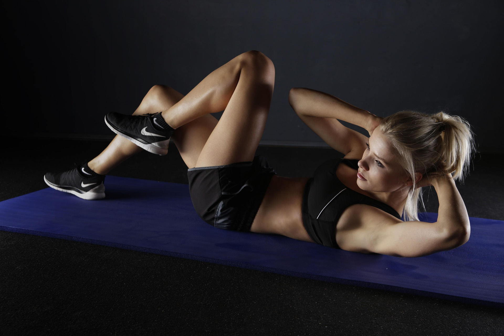
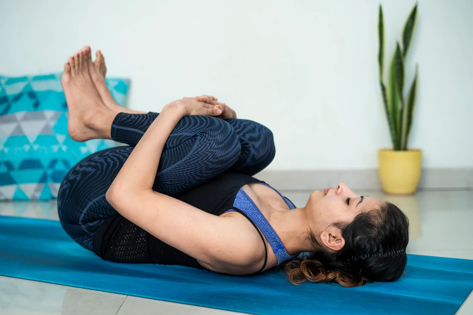
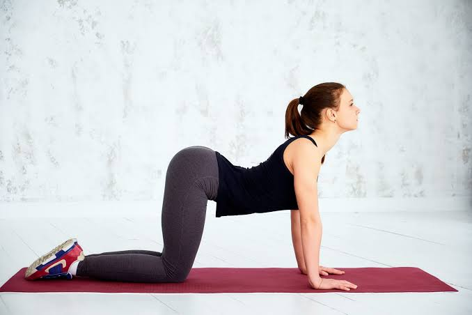
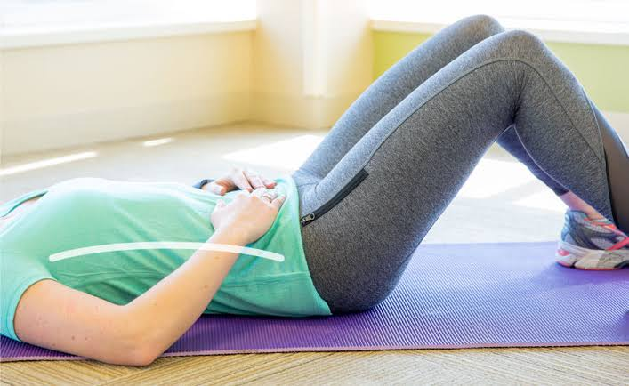

5 Exercises to Relieve Lower Back Pain at Home
Physiotherapist-recommended exercises that are safe, effective, and require no equipment. Start feeling better in as little as one week.

In this article
Why lower back pain is so common
Lower back pain affects 8 out of 10 people at some point in their lives. In India, it is one of the leading causes of missed workdays, especially among office workers in cities like Noida, Delhi, and Mumbai who spend long hours sitting at desks.
The good news? Most lower back pain is not caused by serious structural damage. It is often the result of weak core muscles, tight hip flexors, poor posture, and long periods of inactivity. This means targeted exercises can make a significant difference — often within days.
The 5 exercises below are recommended by physiotherapists for most common types of lower back pain. They are gentle, safe for beginners, and require no equipment — just a yoga mat or a firm surface.
Knee-to-Chest Stretch
Beginner
How to do it
- 1Lie flat on your back on a firm surface with your knees bent and feet flat on the floor.
- 2Gently pull your right knee toward your chest using both hands. Keep your left leg flat or slightly bent.
- 3Hold for 20–30 seconds. You should feel a gentle stretch in your lower back and glutes — not pain.
- 4Slowly lower your leg and repeat with the left knee. Then try pulling both knees to your chest together.
Cat-Cow Stretch
Beginner
How to do it
- 1Start on all fours — hands directly under shoulders, knees under hips. Keep your spine neutral.
- 2Cat: Breathe out and round your back upward toward the ceiling, tucking your chin to your chest and your tailbone under. Hold 3 seconds.
- 3Cow: Breathe in and let your belly drop toward the floor, lifting your head and tailbone upward. Hold 3 seconds.
- 4Flow smoothly between the two positions for 10 repetitions. Move slowly and with your breath.
Pelvic Tilts
Beginner
How to do it
- 1Lie on your back with knees bent, feet flat on the floor, and arms by your sides.
- 2Gently tighten your abdominal muscles and flatten your lower back against the floor by tilting your pelvis slightly.
- 3Hold this position for 5 seconds while breathing normally.
- 4Relax and repeat. The movement is small — focus on engaging your core, not lifting your hips.
Bird-Dog
Intermediate
How to do it
- 1Start on all fours with your back flat and core gently engaged. Do not let your back arch or round.
- 2Slowly extend your right arm straight forward and your left leg straight back at the same time. Keep both parallel to the floor.
- 3Hold for 5–10 seconds while keeping your hips level. Avoid rotating or tilting to one side.
- 4Return to the starting position and switch sides (left arm + right leg). That's one rep.
Glute Bridge
Beginner–Intermediate
How to do it
- 1Lie on your back with knees bent, feet flat on the floor hip-width apart, arms relaxed at your sides.
- 2Press your feet into the floor, squeeze your glutes, and lift your hips until your body forms a straight line from shoulders to knees.
- 3Hold at the top for 2–3 seconds. Do not hyperextend your lower back — keep the movement controlled.
- 4Slowly lower your hips back to the floor and repeat.
Tips for best results
Do these exercises daily for at least 2 weeks. One session will not fix chronic pain — consistency is what creates lasting change.
Start with fewer repetitions and gradually increase. Pain during exercise is a warning sign — stop immediately if you feel sharp pain.
A 5-minute warm walk or gentle movement before exercising reduces the risk of injury and helps muscles respond better.
Spinal discs need adequate hydration to function well. Drink at least 2–3 litres of water daily, especially in Indian summers.
Exercises alone won't help if you sit hunched for 8 hours. Set a timer to stand and walk for 2 minutes every 45 minutes.
Sleep on a firm mattress, preferably on your side with a pillow between your knees. Avoid sleeping on your stomach.
When to see a physiotherapist
While these exercises help most common back pain, some situations require professional assessment. See a physiotherapist if:
- → Pain has lasted more than 2 weeks despite home exercises
- → Pain radiates down your leg (sciatica)
- → You experience numbness or tingling in your legs or feet
- → Pain worsens at night or is not relieved by rest
- → You have had a recent injury, fall, or accident
- → Pain is accompanied by fever or unexplained weight loss
Frequently asked questions
How long does it take for these exercises to work? +
Most people notice improvement within 2–4 weeks of consistent daily practice. Acute pain may reduce in 3–7 days with proper exercises and rest. Chronic pain typically takes 4–8 weeks of consistent effort.
Should I exercise if my lower back hurts? +
Gentle movement is usually better than complete rest for most types of back pain. However, avoid exercises that increase pain. If pain is severe, consult a physiotherapist first.
How many times a day should I do these exercises? +
Most physiotherapists recommend doing these exercises once or twice daily. The morning session helps reduce stiffness; an evening session helps relax muscles after a day of work.
Can I do these exercises during pregnancy? +
Some of these exercises, like pelvic tilts and cat-cow, are commonly recommended during pregnancy. However, always consult your doctor or a women's health physiotherapist before starting any exercise programme during pregnancy.
How can I book a physiotherapist in Noida? +
PhysiQo offers verified physiotherapists for home visits in Noida. Simply message us on WhatsApp and we'll match you with the right physio within hours.
PhysiQo Expert Team
This article was reviewed by our team of verified physiotherapists. PhysiQo connects patients with experienced physios in Noida for home visits and clinic appointments.